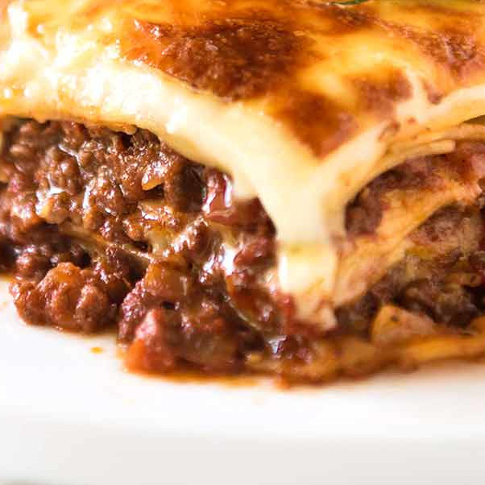

Lasagna recipe

Description
Homemade lasagna may have a few steps, but each step is easy – and I
assure you it’s worth the time; the perfect Italian meal!
The ingredients in this recipe are all things you know and it’s not
difficult at all!
All you’ll need for this easy lasagna recipe is one pan, one bowl, and a
9×13 baking dish!
Ingredients
- 12 lasagna noodles uncooked
- 4 cups mozzarella cheese shredded and divided
- ½ cup parmesan cheese shredded and divided
Tomato sauce
- ½ pound lean ground beef
- 1 onion diced
- 2 cloves garlic minced
- 36 ounces pasta sauce
- 2 tablespoons tomato paste
- 1 teaspoon Italian seasoning
Cheese mixture
- 2 cups ricotta cheese
- ¼ cup fresh parsley chopped
- 1 egg beaten
Steps
-
Heat oven to 350°F. Cook pasta al dente according to package directions.
Rinse under cold water and set aside.
-
Brown beef, sausage, onion and garlic over medium high heat until no
pink remains. Drain any fat.
-
Stir in pasta sauce, tomato paste, Italian seasoning. Simmer 5 minutes.
-
Make Cheese Mixture by combining 1 ½ cups mozzarella, ¼ cup parmesan
cheese, ricotta, parsley, and egg.
-
Add 1 cup meat sauce to a 9x13 pan.
Top with 3 lasagna noodles.
Layer with ⅓ of the Cheese Mixture and 1 cup of meat sauce. Repeat
twice more.
Finish with 3 noodles topped with remaining sauce.
- Cover with foil and bake 45 minutes.
-
Uncover, sprinkle with remaining cheese (2 ½ cups mozzarella cheese and
¼ cup parmesan), and bake an additional 15 minutes or until browned and
bubbly. Broil 2-3 minutes if desired.
- Rest 10-15 minutes before cutting.
Back Home
Baby Potatoes recipe
Rack of Lamb recipe
Cherry Pie recipe